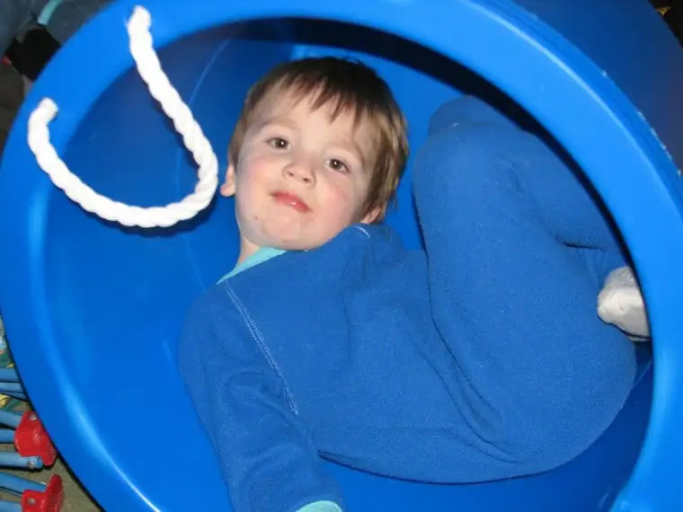
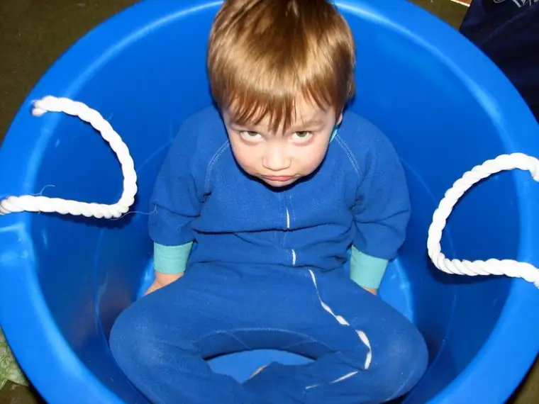
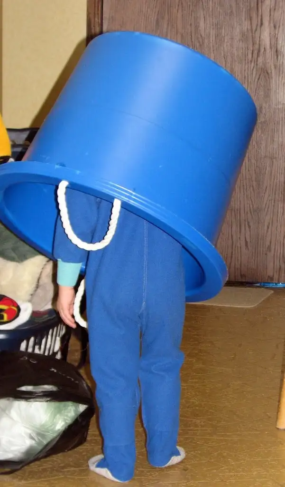

 
Last night, while bumbling around in my bedroom on the hunt for something, I knocked my toe against a rather large bucket that had been parked, upside-down mind you, in front of a dresser. It’s the kind of bucket we use for storing large amounts of things, like toys and shoes and balls. “What in the world is this doing…” My partial admonition to the wise guy or gal who had planted the bucket in that very conspicuous spot was stopped short by the strange feeling of resistance as I tried to pull the bucket upright and out of the way. “Hey, it’s me in here,” came a startled, muffled voice. I looked down to find our smallest munchkin peeking out from within the large, plastic container. A scowl with a hint of hurt had spread across his face. Apparently I’d disrupted a private moment.
{kind=link}
{kind=link}
My young son, who always has had to fight to find his place in the world of four older siblings, had discovered a hiding place; a place where he couldn’t be bothered, where no one could tell him he’s a baby or connive him into sharing his snack or push him around. Until I came and pushed him around. “Oh, I’m so sorry,” I said. “Here,” I continued, placing the bucket over him again. “You get back in there and I’ll leave you alone.” And he did. And the bucket didn’t move for a while. Truly. I smiled, knowing he was living, breathing inside, and wondered how my normally busy boy could manage such stillness. He was a turtle in a shell, a rabbit inside a magician’s hat, a camper in a pup tent. He was whatever he wanted to be in space of his own.
I think of my days as a younger mother of even smaller kids when, sometimes, my only reprieve was hiding out in the bathroom for five minutes or under the covers “just ten more minutes” before my husband left for work. I think of my “night out” each week when I pack up my laptop and leave the house to hole away in a coffee shop somewhere to work and read. I think of how my daughter, when she’s feeling stifled or frustrated, runs out back and swings, even though some would say she’s too old to really enjoy it.
{kind=link}

ver and whenever we can get it. Even Bucket Boy.